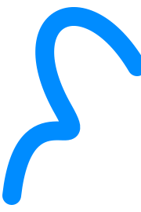

Dr. José Antonio
Canales
Cirujano ortopedista especializado en columna
Contamos con especialistas comprometidos con brindar atención personalizada y acompañamiento durante cada etapa del proceso. Conoce a nuestro equipo y encuentra la orientación que necesitas para el cuidado de tu salud.

Cirujano ortopedista especializado en columna

Cirujano ortopedista especializado en columna

Neurocirujana especializada en columna

Cirujano ortopedista especializado en columna